تجمعات الدب الأكبر المجرية هي مجموعة مميزة جدًا من المجرات في نصف الكرة الشمالي. على عكس البيئة الكثيفة لعنقود العذراء، فإن معظم المجرات الرئيسية هنا هي مجرات حلزونية. تُقسم هذه المجموعة من المجرات عادةً إلى مجموعتين متميزتين - تجمع الدب الأكبر الشمالي وتجمع الدب الأكبر الجنوبي، ولكن لا يوجد حدود حقيقية بين المجموعتين، وتقع المجرات في كلا المجموعتين على نفس المسافة تقريبًا منا. تقع مجموعة تجمع السلوقيان II المجري الأقرب أيضًا في هذا الجزء من السماء بجوار تجمع الدب الأكبر الجنوبي.
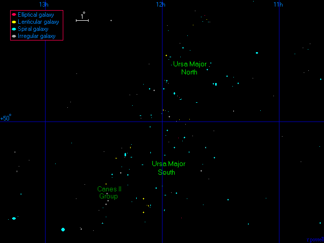
هذه خريطة لتجمع الدب الأكبر المجري الشمالي. تُظهر معظم المجرات الرئيسية في هذه المجموعة التي تقع شمال خط عرض 50 درجة، وهو حد تعسفي إلى حد ما. لا توجد مجرات إهليلجية كبيرة هنا - معظم المجرات الكبيرة هي مجرات حلزونية.
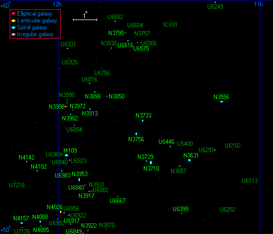
أدناه - ثلاث مجرات من تجمع الدب الأكبر المجري الشمالي. (على اليمين) NGC 3631، (في الوسط) NGC 3953، و(على اليسار) NGC 4088 هي ثلاث من ألمع المجرات الحلزونية في هذه المجموعة.
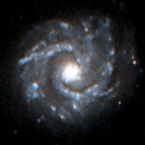 |
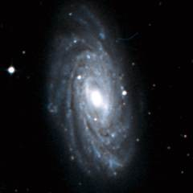 |
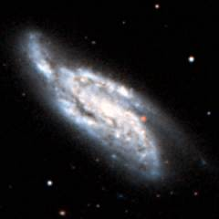 |
| NGC 3631 | NGC 3953 | NGC 4088 |
هذه قائمة بأكبر المجرات في تجمع الدب الأكبر الشمالي. تحتوي هذه المجموعة على 32 مجرة يزيد قطر كل منها عن ثلاثين ألف سنة ضوئية.
| قائمة أكبر المجرات في تجمع الدب الأكبر الشمالي | |||||||
|---|---|---|---|---|---|---|---|
| الاسم | الإحداثيات الاستوائية مطلع مستقيم RA ميل Dec |
القدر الأزرق | النوع | الحجم الزاوي دقائق قوسية(′) |
الحجم (ألف سنة ضوئية) |
سرعة التقهقر (كم/ث) |
|
| NGC 3556 | 11 11.5 | +55 40 | 10.9 | SBc | 8.1 | 130 | 865 |
| NGC 3631 | 11 21.0 | +53 10 | 11.1 | Sc | 4.9 | 80 | 1344 |
| UGC 6399 | 11 23.4 | +50 54 | 14.3 | Sm | 2.6 | 40 | 996 |
| UGC 6446 | 11 26.7 | +53 45 | 13.8 | Scd | 2.8 | 45 | 826 |
| NGC 3718 | 11 32.6 | +53 04 | 11.6 | SBa | 7.6 | 120 | 1177 |
| NGC 3729 | 11 33.8 | +53 07 | 12.1 | SBa | 2.9 | 45 | 1214 |
| NGC 3733 | 11 35.0 | +54 51 | 13.0 | SBc | 4.5 | 70 | 1360 |
| UGC 6575 | 11 36.4 | +58 12 | 14.6 | Sc | 1.9 | 30 | 1372 |
| NGC 3756 | 11 36.8 | +54 18 | 12.3 | SBbc | 3.8 | 60 | 1467 |
| UGC 6616 | 11 39.3 | +58 16 | 14.3 | Sc | 2.3 | 35 | 1306 |
| NGC 3795 | 11 40.1 | +58 37 | 14.2 | Sbc | 2.1 | 35 | 1364 |
| UGC 6667 | 11 42.5 | +51 36 | 14.3 | Sc | 2.6 | 40 | 1169 |
| NGC 3850 | 11 45.6 | +55 53 | 14.4 | SBc | 1.9 | 30 | 1324 |
| NGC 3898 | 11 49.3 | +56 05 | 11.6 | Sab | 3.7 | 60 | 1343 |
| NGC 3913 | 11 50.6 | +55 21 | 13.4 | Scd | 2.4 | 40 | 1125 |
| NGC 3917 | 11 50.8 | +51 49 | 12.5 | Sc | 5.0 | 80 | 1159 |
| NGC 3922 | 11 51.2 | +50 09 | 13.9 | S0 | 1.9 | 30 | 1199 |
| UGC 6840 | 11 52.1 | +52 06 | 14.6 | SBm | 2.0 | 35 | 1234 |
| UGC 6849 | 11 52.7 | +50 02 | 14.9 | Sm | 1.7 | 30 | 1194 |
| NGC 3953 | 11 53.8 | +52 20 | 10.9 | SBbc | 7.6 | 120 | 1240 |
| NGC 3972 | 11 55.8 | +55 19 | 13.0 | SBbc | 3.7 | 60 | 1016 |
| UGC 6917 | 11 56.5 | +50 26 | 13.3 | SBm | 3.5 | 55 | 1108 |
| NGC 3982 | 11 56.5 | +55 07 | 12.1 | SBb | 2.3 | 40 | 1280 |
| M109, NGC 3992 | 11 57.6 | +53 23 | 10.8 | SBbc | 6.9 | 110 | 1229 |
| NGC 3998 | 11 57.9 | +55 27 | 11.6 | S0 | 2.9 | 45 | 1211 |
| UGC 6983 | 11 59.2 | +52 42 | 13.4 | SBc | 3.1 | 50 | 1262 |
| NGC 4026 | 11 59.4 | +50 58 | 11.7 | S0 | 4.8 | 75 | 1129 |
| NGC 4085 | 12 05.4 | +50 21 | 13.2 | SBc | 2.5 | 40 | 943 |
| NGC 4088 | 12 05.6 | +50 32 | 11.2 | SBc | 6.0 | 95 | 951 |
| NGC 4102 | 12 06.4 | +52 43 | 12.0 | SBb | 3.1 | 50 | 1026 |
| NGC 4142 | 12 09.5 | +53 06 | 13.9 | SBcd | 2.1 | 35 | 1337 |
| NGC 4157 | 12 11.1 | +50 29 | 12.1 | SBb | 6.6 | 105 | 967 |
في الأسفل تظهر المجرة الحلزونية M109. هذه واحدة من ألمع المجرات في المجموعة. يحتوي كتالوج ميسييه على 39 مجرة، وهذه المجرة هي على الأرجح المجرة في الكتالوج التي تبدو أكثر شبهاً بمجرة درب التبانة.
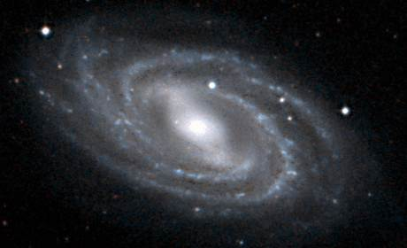
| خصائص تجمع الدب الأكبر الشمالي | ||
|---|---|---|
| الإحداثيات الاستوائية | RA=11h40m | Dec=+4° |
| الإحداثيات المجرية | l=114° | b=+60° |
| الإحداثيات المجرية الفائقة | L=60° | B=+2° |
| المسافة إلى مركز المجموعة المجرية | 55 مليون سنة ضوئية | |
| عدد المجرات الكبيرة في المجموعة | 32 | |
هذه خريطة لتجمع الدب الأكبر الجنوبي. تُظهر معظم المجرات الرئيسية في هذه المجموعة التي تقع جنوب خط عرض 50 درجة. مثل تجمع الدب الأكبر الشمالي، فإن معظم المجرات الرئيسية في هذه المجموعة هي مجرات حلزونية.
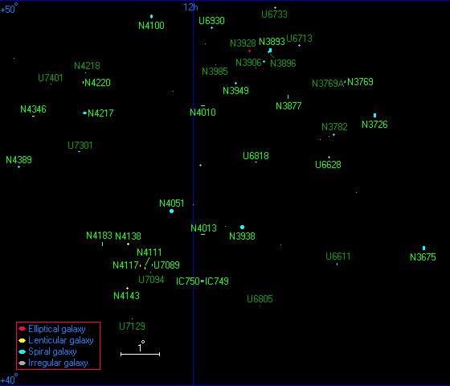
أدناه - ثلاث مجرات من تجمع الدب الأكبر الجنوبي. (على اليمين) NGC 3675، (في الوسط) NGC 3726 ، و (على اليسار) NGC 3938 هي ثلاث من ألمع المجرات الحلزونية في هذه المجموعة.
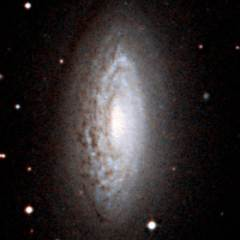 |
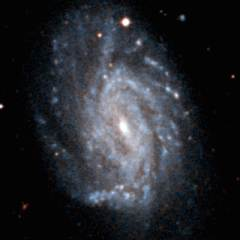 |
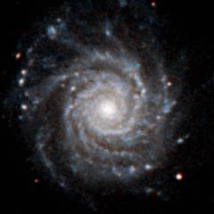 |
| NGC 3675 | NGC 3726 | NGC 3938 |
هذه قائمة بأكبر المجرات في تجمع الدب الأكبر المجري الجنوبي. تحتوي هذه المجموعة على 28 مجرة يزيد قطر كل منها عن ثلاثين ألف سنة ضوئية.
| قائمة أكبر المجرات في تجمع الدب الأكبر المجري الجنوبي | |||||||
|---|---|---|---|---|---|---|---|
| الاسم | الإحداثيات الاستوائية مطلع مستقيم RA ميل Dec |
القدر الأزرق | النوع | الحجم الزاوي دقائق قوسية(′) |
الحجم (ألف سنة ضوئية) |
سرعة التقهقر (كم/ث) |
|
| UGC 6161 | 11 06.8 | +43 43 | 16.0 | SBd | 1.8 | 30 | 991 |
| NGC 3600 | 11 15.9 | +41 35 | 14.0 | Sa | 3.6 | 60 | 962 |
| NGC 3675 | 11 26.1 | +43 35 | 11.0 | Sb | 6.2 | 100 | 1001 |
| NGC 3726 | 11 33.4 | +47 02 | 10.9 | SBc | 6.0 | 95 | 1073 |
| NGC 3769 | 11 37.7 | +47 54 | 12.6 | SBb | 2.8 | 45 | 942 |
| UGC 6628 | 11 40.1 | +45 57 | 13.4 | SBm | 2.7 | 45 | 1071 |
| NGC 3877 | 11 46.1 | +47 30 | 11.8 | Sc | 5.2 | 85 | 1113 |
| NGC 3893 | 11 48.6 | +48 43 | 11.4 | SBc | 4.1 | 65 | 1177 |
| UGC 6818 | 11 50.8 | +45 48 | 14.7 | Irr | 1.9 | 30 | 1036 |
| NGC 3938 | 11 52.8 | +44 07 | 11.1 | Sc | 5.0 | 80 | 1037 |
| NGC 3949 | 11 53.7 | +47 51 | 11.7 | Sbc | 2.7 | 45 | 1010 |
| UGC 6930 | 11 57.3 | +49 17 | 12.9 | SBcd | 3.3 | 55 | 980 |
| NGC 4013 | 11 58.5 | +43 57 | 12.3 | Sb | 4.8 | 75 | 1064 |
| IC 749 | 11 58.6 | +42 44 | 13.0 | SBc | 2.2 | 35 | 1001 |
| NGC 4010 | 11 58.6 | +47 16 | 13.3 | SBcd | 3.9 | 60 | 1117 |
| IC 750 | 11 58.9 | +42 43 | 13.0 | Sab | 2.6 | 40 | 932 |
| NGC 4051 | 12 03.2 | +44 32 | 10.9 | SBbc | 5.1 | 80 | 934 |
| UGC 7089 | 12 06.0 | +43 09 | 14.0 | Sd | 3.2 | 50 | 1004 |
| NGC 4100 | 12 06.1 | +49 35 | 11.9 | Sbc | 5.2 | 85 | 1273 |
| NGC 4111 | 12 07.1 | +43 04 | 11.5 | S0 | 3.3 | 55 | 1027 |
| NGC 4117 | 12 07.8 | +43 08 | 14.2 | S0 | 1.9 | 30 | 1163 |
| NGC 4138 | 12 09.5 | +43 41 | 12.2 | S0 | 3.0 | 45 | 1131 |
| NGC 4143 | 12 09.6 | +42 32 | 11.8 | S0 | 2.9 | 45 | 1152 |
| NGC 4183 | 12 13.3 | +43 42 | 12.9 | Sc | 5.1 | 80 | 1157 |
| NGC 4217 | 12 15.8 | +47 06 | 12.1 | Sb | 4.9 | 80 | 1232 |
| NGC 4220 | 12 16.2 | +47 53 | 12.3 | S0 | 3.6 | 60 | 1130 |
| NGC 4346 | 12 23.5 | +47 00 | 12.1 | S0 | 3.2 | 50 | 980 |
| NGC 4389 | 12 25.6 | +45 41 | 12.6 | SBbc | 2.5 | 40 | 931 |
في الأسفل تظهر صورة لـ NGC 4051، وهي مجرة حلزونية أخرى في هذه المجموعة. تُعرف NGC 4051 بأنها مجرة سيفرت، مما يعني أن لديها نواة لامعة تشبه النقطة، وربما تكون مدعومة بمواد تسقط في ثقب أسود فائق الكتلة.
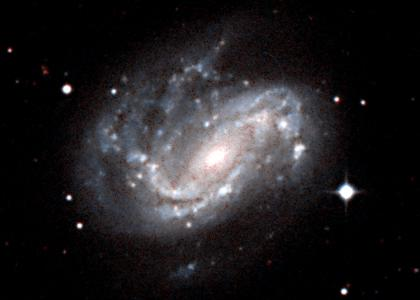
| خصائص تجمع الدب الأكبر المجري الجنوبي | ||
|---|---|---|
| الإحداثيات الاستوائية | RA=11h55m | Dec=+46° |
| الإحداثيات المجرية | l=150° | b=+68° |
| الإحداثيات المجرية الفائقة | L=69° | B=+1° |
| المسافة إلى مركز المجموعة المجرية | 55 مليون سنة ضوئية | |
| عدد المجرات الكبيرة في المجموعة | 28 | |